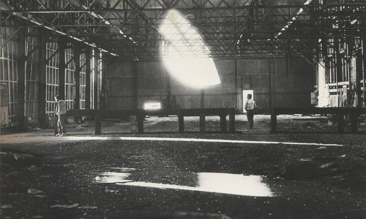

Zanele Muholi
Zanele Muholi is a photographer, videographer, and a human rights activist. Their work centers on depicting lesbian and transgender life in South Africa. Many of their works also explores the other aspects of LGBTQ+ life, as well as life in other countries. They made a portrait series, Faces and Phases, which is based on personal accounts of people that live within a country that protects their rights constitutionally but does not prevent targeted violence. They also portrays love, intimacy, and daily life in the LGBTQ+ community (Brooklyn Museum).
This photographer was selected because their photographs are important in showing LGBTQ+ life as a person of South African descent. They explore many themes in their photographs, such as strength, and humanizes their subjects by portraying their struggles. They also concentrate on a wide and diverse range of subjects and includes both gay and trans people into her work. They also show the kinship bonds between the subjects, and the community that they have created. Lastly, they have many works that are on exhibition now, which reach audiences beyond South Africa.
Ayanda & Nhlanhla Moremi's Wedding I
Collen Mfazwe, August House, Johannesberg 2012
Alvin Baltrop
camera. To support himself, he did odd jobs such as being a street vendor, cab driver, and jewelry designer. Although he died in 2004, he left an important body of work that is still viewed today. He was born in the Bronx, and served in the Vietnam War in the US Navy. There, he photograph sailors’ chores or break times. He attended New York City’s School of Visual Arts from 1973 to 1975, when he began photographing the gay communities in the West Village area and piers. He was nominated for the Louis Comfort Tiffany Foundation Award, and he gained notoriety after Douglas Camp wrote an article about him in 2008 (Bronx).
He was selected for this museum exhibit because he is important to Black culture and photographed many Black people in various settings. He is unique in that he served in the Navy, and also was nominated for an award. His talent strikes the audience as they view pictures of Black lives. He also photographed places, showing different environments that Black people live and work in. He also contributed to queer culture by photographing Black LGBTQ+ youth, and fought for LGBTQ+ rights. Overall, he is important to both Black and LGBTQ+ culture because his photographs display their lifestyles.
Untitled (Portrait of Marsha P Johnson)
Pier 52 (Gordon Matta-Clark's "Day's End"), 1975-1976.